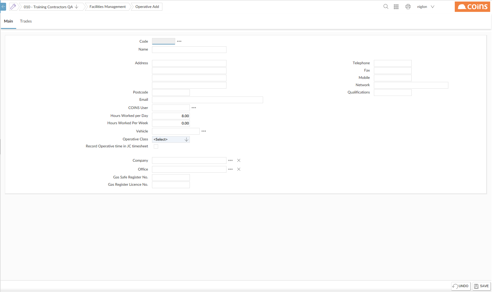
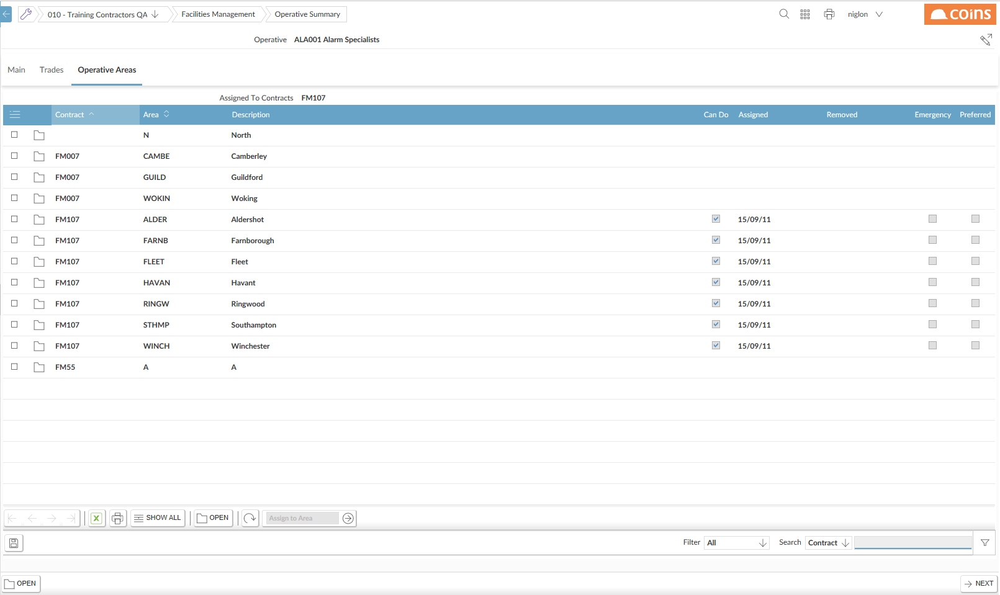

are the people who you can assign to work on . There are different types of :
- Your direct employees, whose information is held in Payroll.
- Subcontractors, whose information is held in Subcontract Ledger.
- Temporary , who are employees of a subcontractor. Their information is held in Subcontract Ledger.
- , which are groups of two or more who always work together. If a is a member of a , you cannot assign work to that individually.
- Others. These are not linked to information elsewhere in .
For each , you specify the areas they work on and the trades they work in. This allows FM to only display that are relevant to particular and locations.
To set up :
- Go to FM > Setup > Scheduling >.

- Select the Personnel Type of the you want to add and click
 .
.
- Click
 .
.

- In the Code field:
- To add a subcontractor, enter the subcontractor's code.
- To add an employee, enter the employee's Payroll ID.
- To add a temporary , use the lookup to select the from the list of subcontractor employees.
- To add an 'other' , enter a new code.
- If you are setting up the based on Payroll or Subcontract data, fills in the address details from the information already on the system.
- Complete the 's details.
- Enter the 's User ID. (In order to use the scheduling features of FM, the must be set up as a user.)
- On the Trades tab, the trades that the will work on.
- Click
 .
.
You also need to specify the geographical areas in which the works:
- Click the link in the Code column.

- On the Worker Areas tab, for each geographical area in which the will work:
- Open the record.
- the Can Do field.
- Save the record.
- configuration
Subcontractor employees are set up in Subcontractor Maintenance, on the People tab. These correspond to records in Human Resources with a Payroll type of Subcontractor.